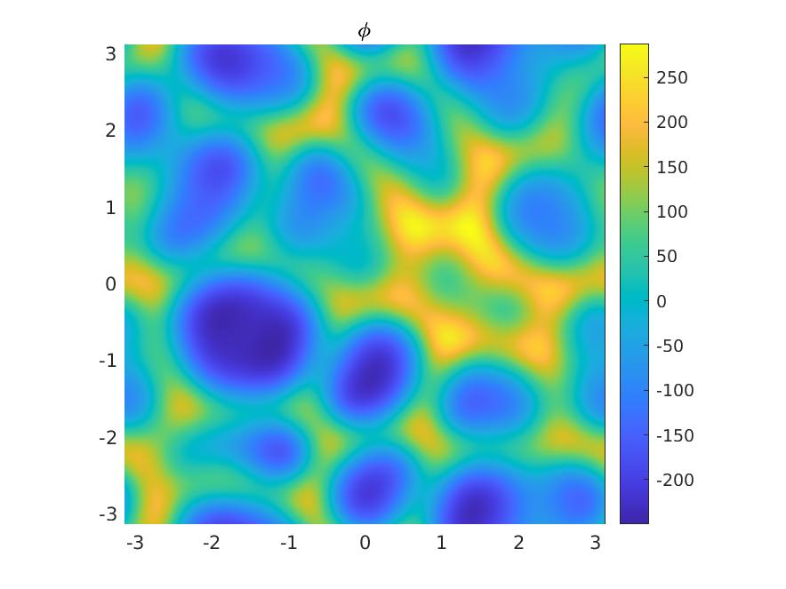
Snapshot of a 2D Kuramoto-Sivashinsky solution
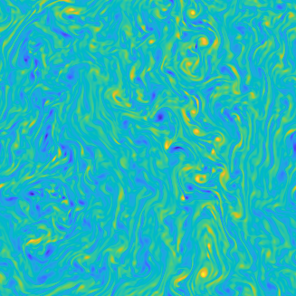
Vorticty in a 2D flow
Vortex tubes and stream lines.
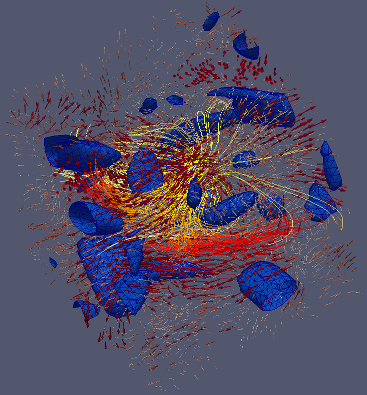
1D Kuramoto Sivashinsky spectral simulation, time on y-axis.
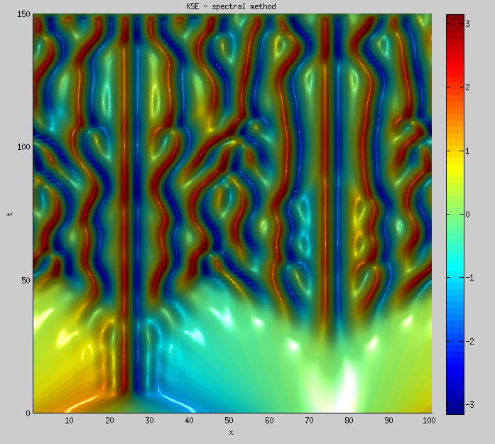
3D Euler-Voigt simulation with vortex tubes and streamlines.
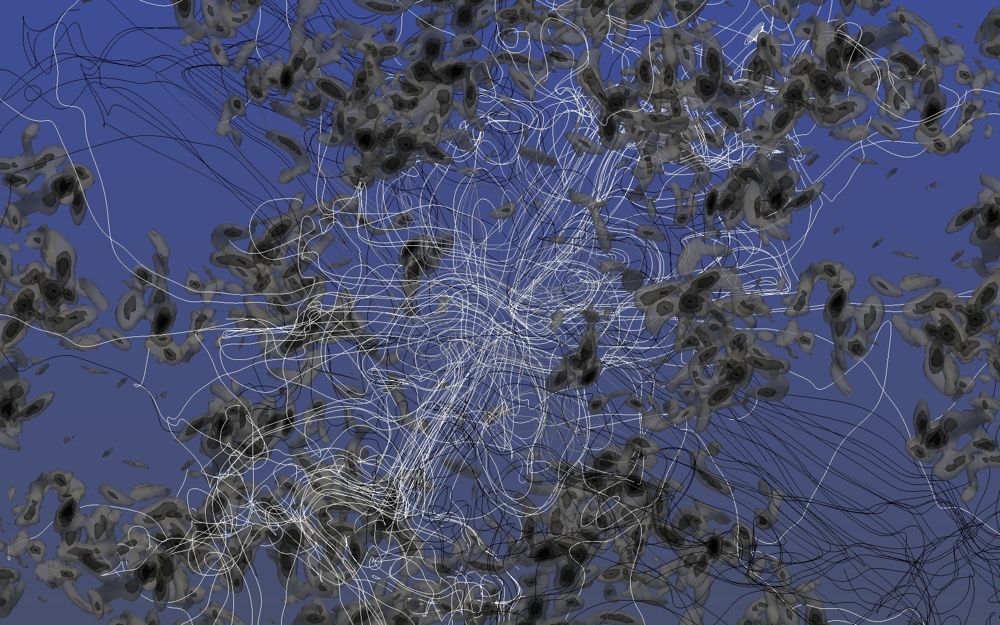
Simulations of turbulent flow run with collabortors at Texas A&M.
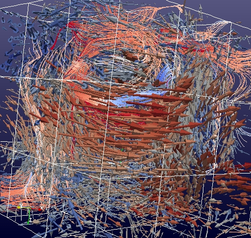

Isosurfaces and velocity
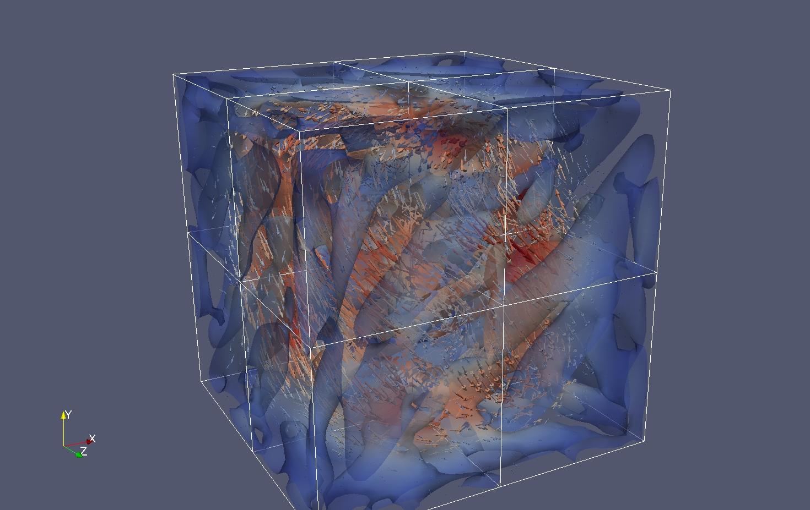
Laminar flow
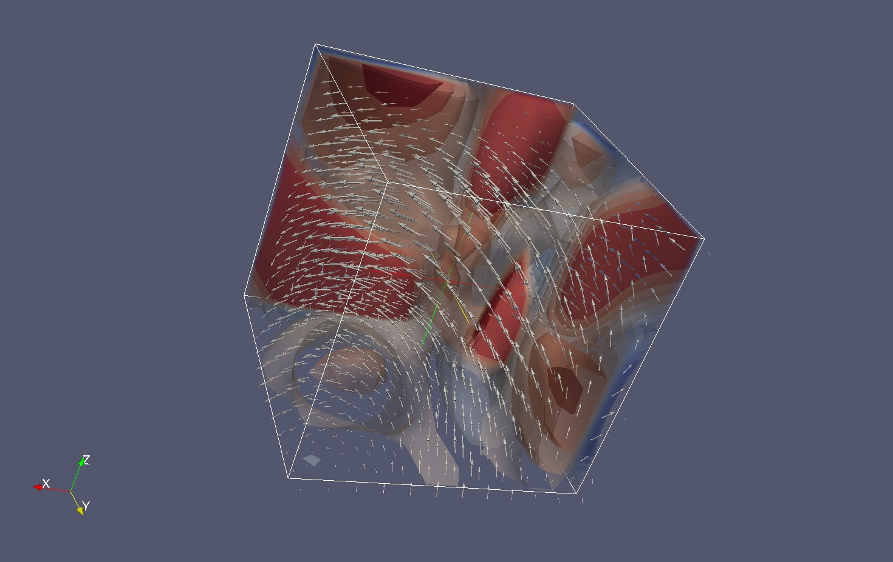
Taylor-Green flow
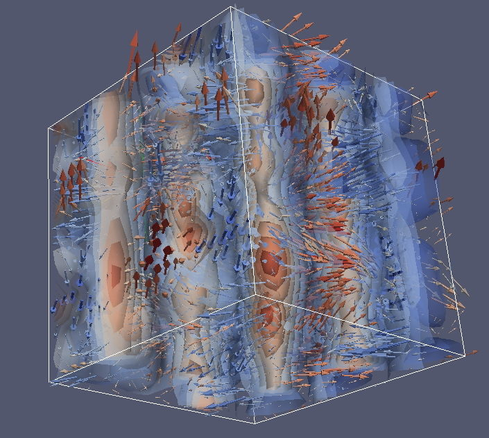
Some vortex tubes
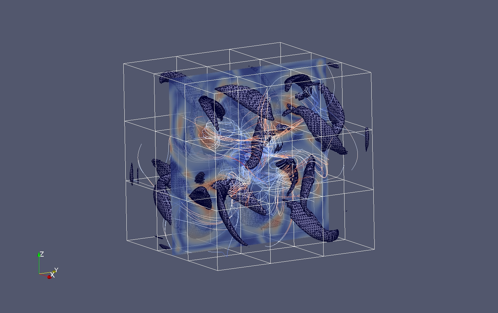
Vortex Cloud
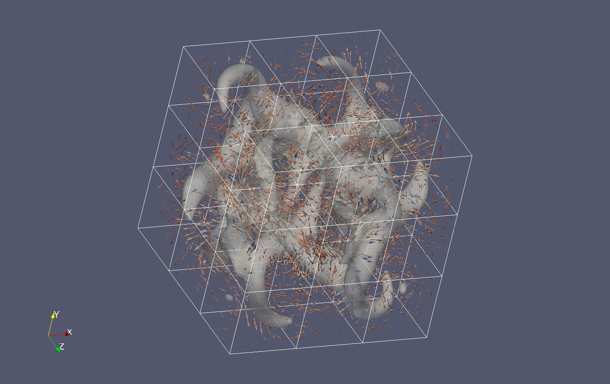
Vortex vectors and isosurfaces.